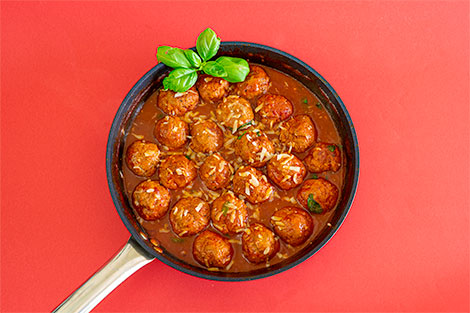

Meatballs with tomato sauce

Description
This italian classic is a delicious and easy to make dish
Ingredients
- 700 g of minced beef
- 100 g bacon cut into pieces
- 1 small onion chopped
- 1 egg
- 3 tablespoons of breadcrumbs
- salt
- black pepper
- Dried oregano leaves
- 4 tablespoons of olive oil
- 2 minced garlic cloves
- 1 bay leaf
- 300 g of tomato pulp
- 125 ml of white wine
- 350 ml of natural beef broth
- 1 heaping tablespoon of brown sugar
- hopped fresh basil leaves
- Freshly grated Parmesan cheese
Steps
- In a food processor or food processor, place the onion and bacon.
Grind everything until it becomes a paste.
- Season the meat with salt and pepper.
Add oregano leaves to taste and the bacon and onion mixture.
Also add the broken egg and the breadcrumbs.
Mix everything very well.
- Scoop out tablespoons of meat and form into compact balls.
- In a large skillet, heat the oil, bay leaf and garlic.
Stir and let it heat up without letting the garlic fry.
Place the meatballs and let them fry lightly on both sides.
- Meanwhile, in a bowl, mix the tomato pulp, beef stock and white wine.
- After the browned meatballs, add the tomato sauce and cook over high heat for 7 minutes.
After the time, add the brown sugar and adjust the salt and pepper seasonings.
Stir and cook for another 7 minutes.
- After the time has passed and the sauce has thickened, turn off the heat and stir in the basil leaves.
Finally, sprinkle with grated cheese.
Return to home